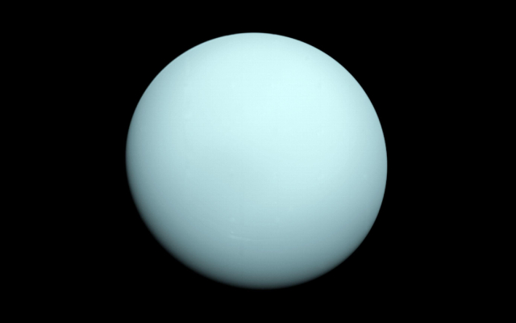
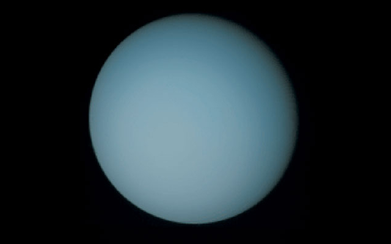
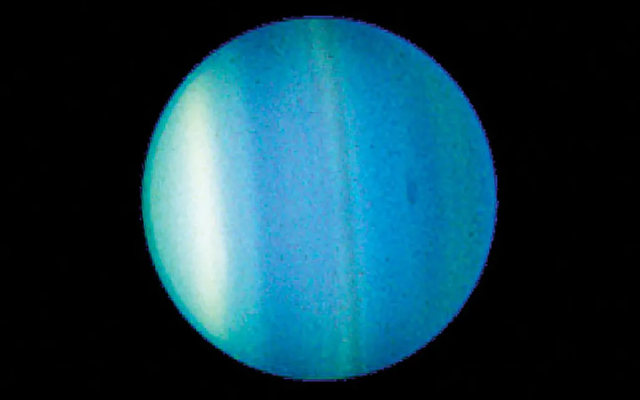

Uranus
Uranus is the seventh planet from the Sun. It is a gas giant like Jupiter and Saturn, and also cyan-coloured
Information

| Property | Value |
|---|---|
| Mass (1024 kg) | 86.811 |
| Volume (1010 km3) | 6,833 |
| Mean Density (kg/m3) | 1,270 |
| Surface Area | 8.083 billion km2 |
| Average Temperature | ~78 K (-195 C) |
| Wind Speeds | Up to 250 m/s |
About Uranus


Uranus is the seventh planet from the Sun. It is a gas giant, much like Jupiter and Saturn, and also cyan-coloured. The planet is primarly composed of water, ammonia, and methane, and its atmosphere has the lowest minimum temperature of all the Solar System's planets (49 K, or -224 C.) It has an 84-Earth-year orbital period, meaning that its poles get approximately 42 years of continuous sunlight, follow by complete continuous darkness. Uranus has 28 known natural satellites,including five major moons, those being Miranda, Ariel, Umbriel, Titania, and Oberon.